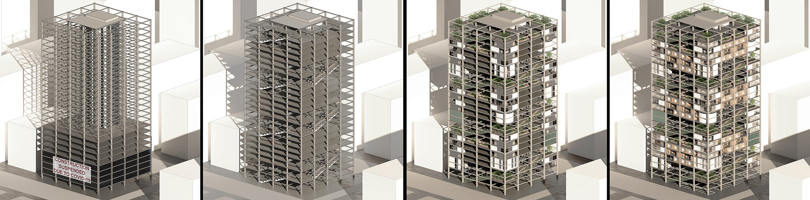
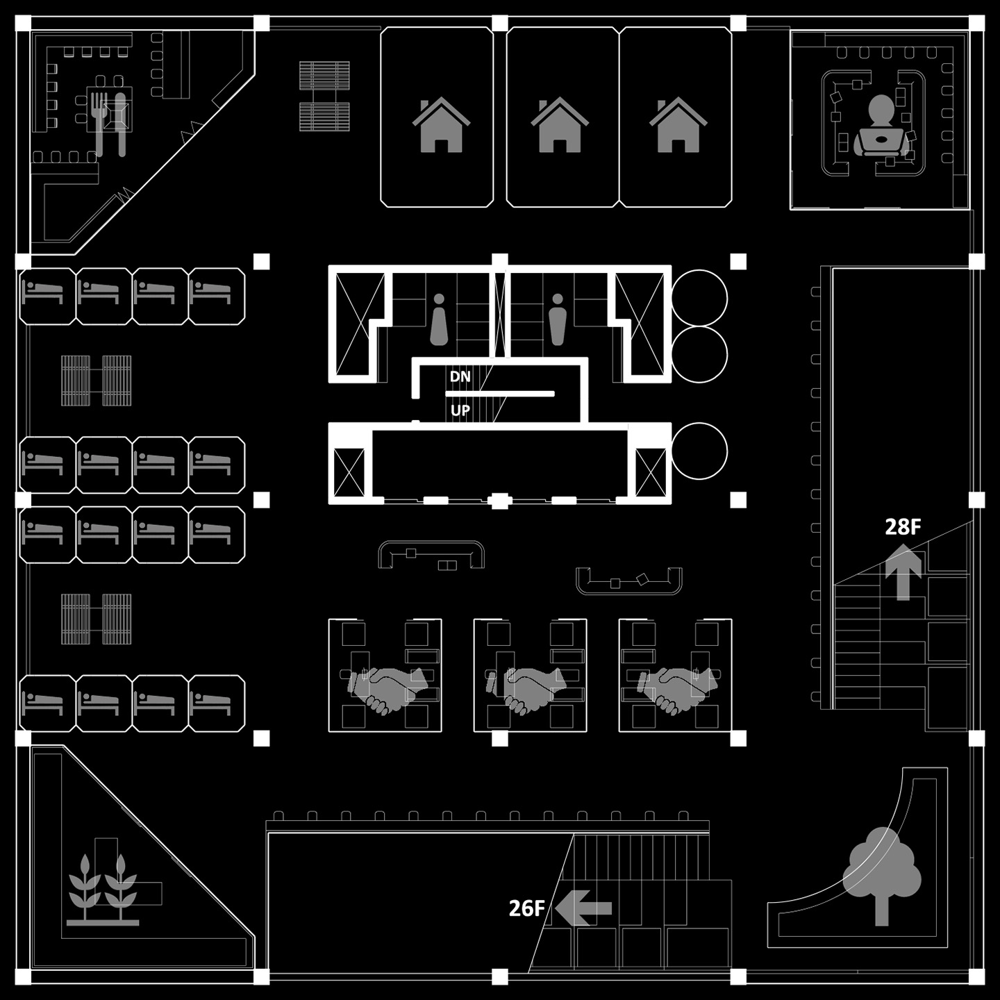
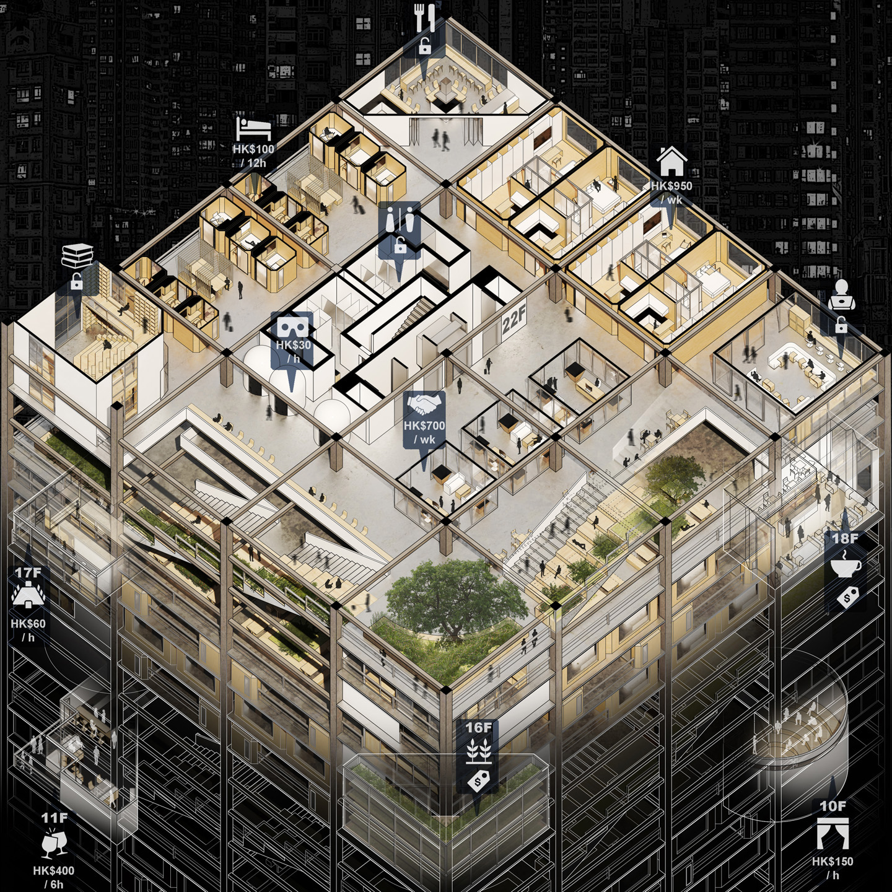
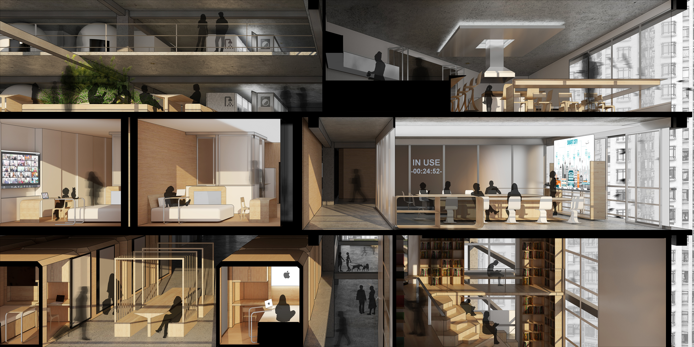
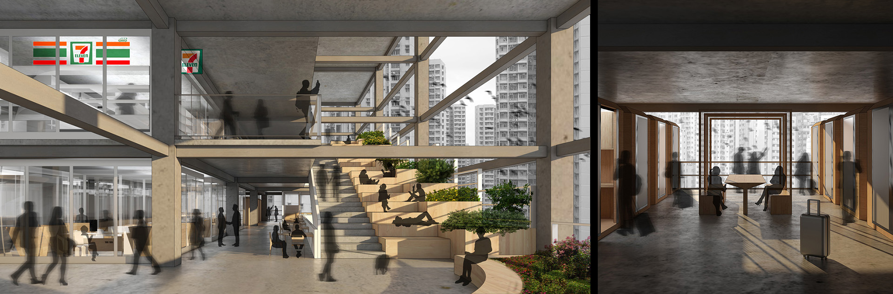

WORK-FROM-HOME LIVE-IN-OFFICE
While the normalization of work-from-home under COVID-19 strengthens the workday presence of home,
its implication on work-live integration and individualization of society can act differently after the pandemic.
When work-from-home meets the recovering of personal mobility, home can become part of travel as an instant place to physically stay while digitally connect.
As for the urban jungles of office towers that have been neglected under work-from-home practice, will their colossal skeletons become pre-pandemic monuments?
Can they remain supportive to social ties in another 'office culture' without the need of office?
This project responds to the challenges through a live-in-the-office vision. It remolds the skeleton of a generic office typology in Hong Kong into an
alternative live-work accommodation for post-pandemic nomads on itinerary while nourishing instant ‘office culture’ for the transient community.
In acknowledging a hyper-consumerist future, 'office members' will customize their lifestyles by purchasing instant and long-term access to shared amenities of their needs,
explore diverse offerings and experience across floors through a spiral garden leading upward, meet their instant ‘office-mates’ at shared spaces, and present their
works, ideas, and journeys to the city through a continuous public realm of open-air floors linked by the spiral garden.




